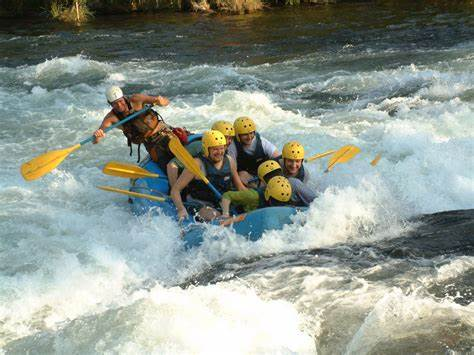
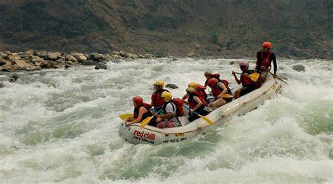
| 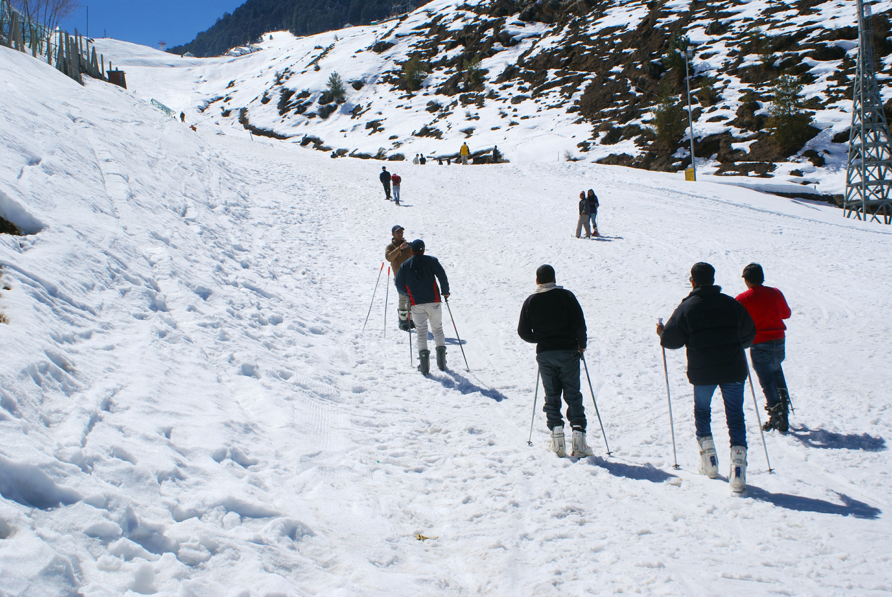 | 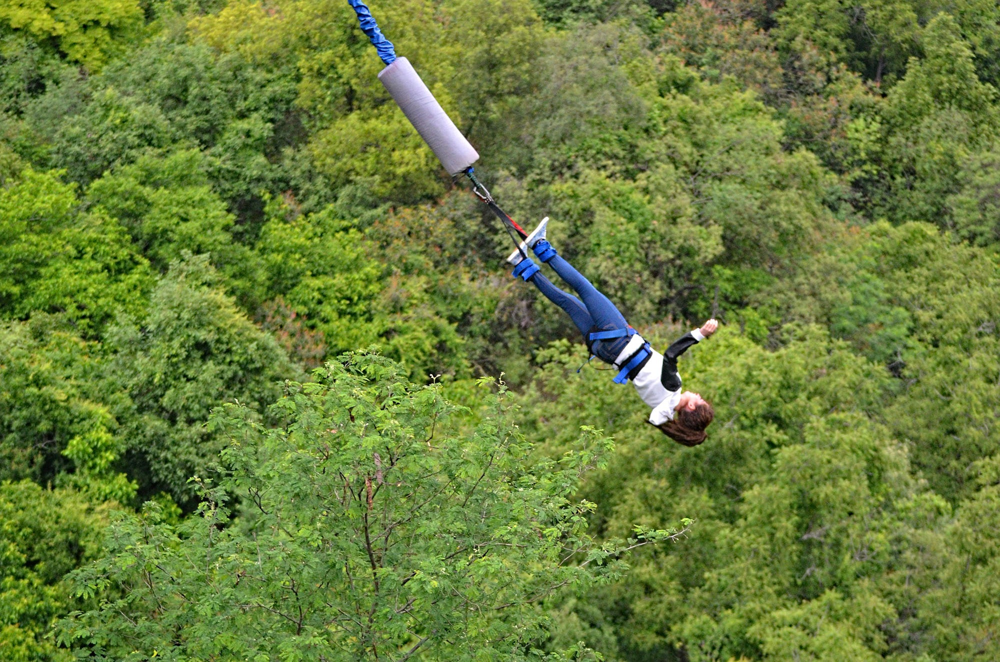 | 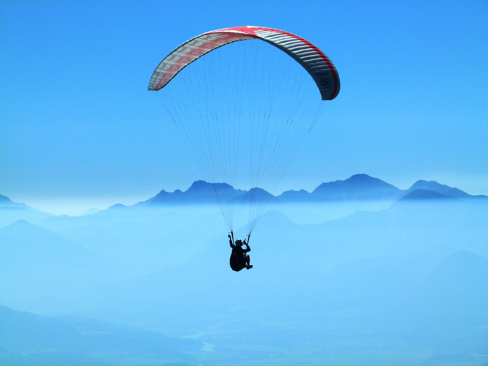 |  |
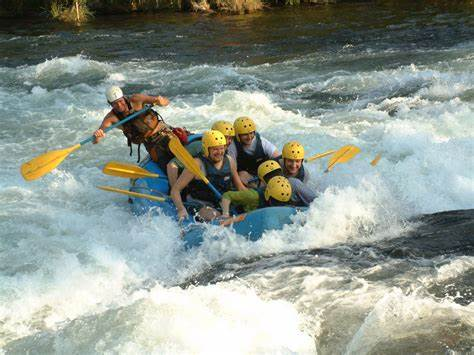
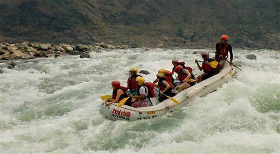
|
Rishikesh is one of the best places in North India to practice yoga and go for water rafting. It is no more just a Hindu pilgrimage where devotees gather to cleanse their sins in the holy waters, but is gradually gaining popularity as a hotbed of adventure sports, like river rafting. Brahmapuri is one of the best places for water rafting here. It is perfect for both novice and experienced; initiation, double trouble, Hilton and terminator are some of the rapids that water rafters love to hit here. |
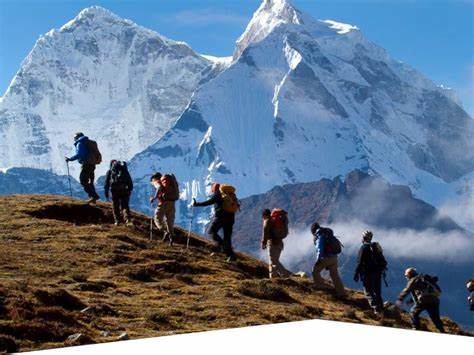
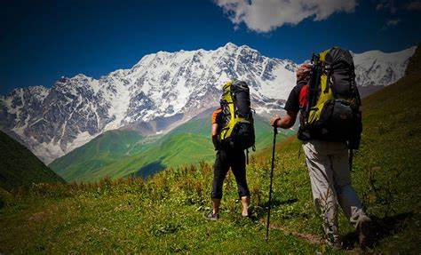
|
There is a reason why Uttarakhand in India is named as the Land of Gods. Gangotri, a sacred place for Hindu pilgrimages, lies in Uttarakhand. Several pilgrims undertake the arduous journey to the source of Ganga to absorb the spiritual energy of the sages who once lived here. More recently, trekking in Uttarakhand has begun gaining popularity as a recreational adventure sport. |
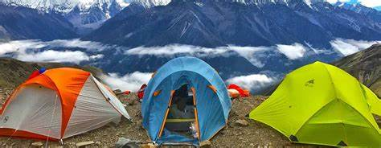
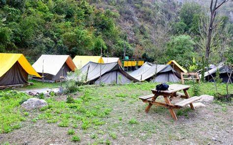
|
The best way to get lost in the lap of nature is by camping in Uttarakhand with family and friends surrounded by lush greenery making for a picture postcard. The many scenic landscapes of Uttarakhand are ideal for setting up tents and lighting a bonfire. The feeling of oneness with nature when you are with bare essentials is an experience to remember. |